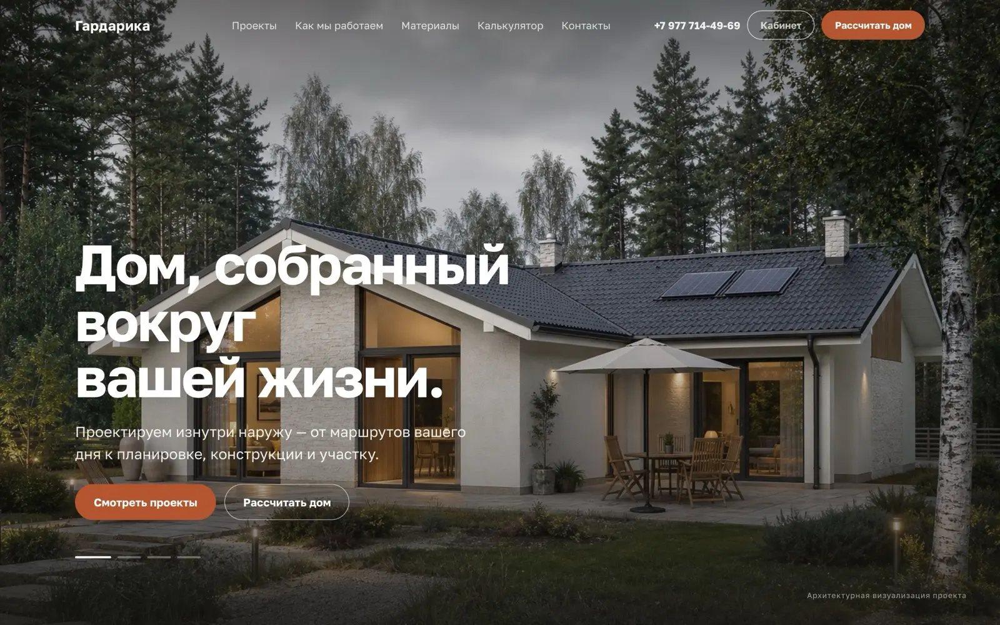
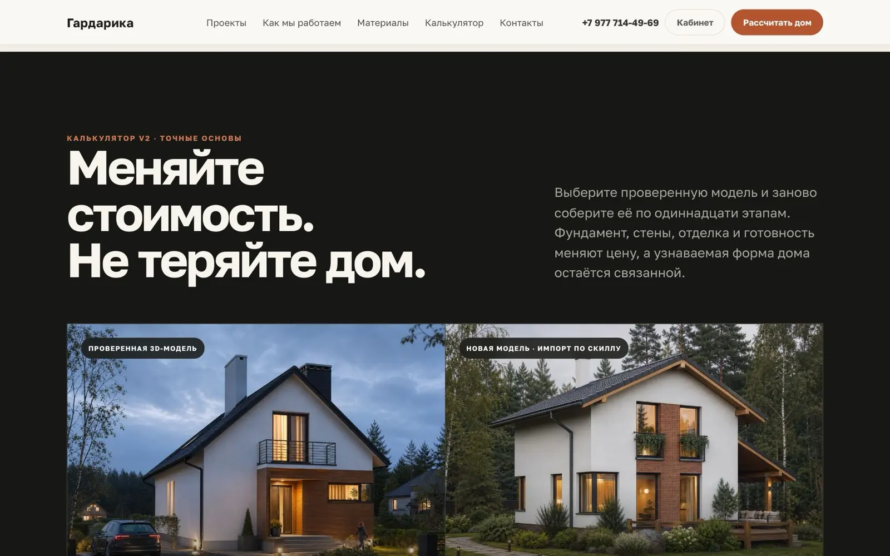

Главная и вход в конструкторГардарика
в разработкеАрхитектурно-строительное бюро — каталог проектов и конструктор дома
- Задача
- Действующий сайт собран на e-commerce-шаблоне: корзина и «1 товар» под каждым проектом дома, меню на 25 пунктов, а обещанный на первом экране расчёт стоимости никуда не вёл.
- Решение
- Каталог проектов со страницей на каждый дом и конструктор на одиннадцать шагов: 3D-модель на Three.js, планировки, собираемые из тех же модулей, что и объём, выгрузка предварительной сметы в PDF. Любой дом из каталога открывается в конструкторе как редактируемая основа.
- Результат
- Путь «посмотрел проект → собрал свой → получил смету» проходится без звонка менеджеру. Сейчас проект в разработке — покажу вживую на созвоне.